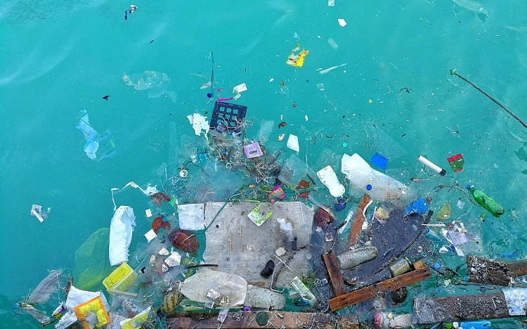

The
HLA Initiative
Did you know?
Plastics in our oceans have reached a critical point!
What are single-use plastics?
What can I do?
See Who's making a difference
The primary issue
The majority of all marine litter is plastic and comes from use on the land, traveling via wind and river until it reaches the sea. While it floats and degrades, the plastic leaches marine-toxic chemicals into the water.

Disposable plastic shopping bags take around 20 years to break down in the ocean – leaving chemicals and toxic particles (microplastics) behind. A bottle that holds one drink and is disposed of immediately after consumption will take an incredible 450 years or more to break down into microplastic.

As a result it often ends up on the beaches of other countries and islands. The most effective way to produce a positive impact on this situation is to reduce/eliminate single use plastic products.